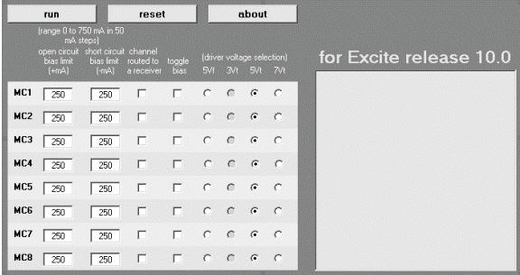
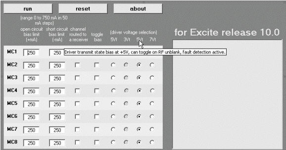
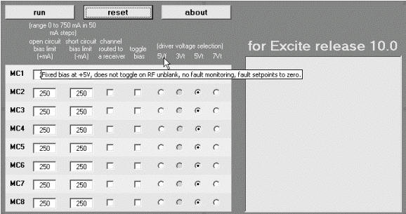
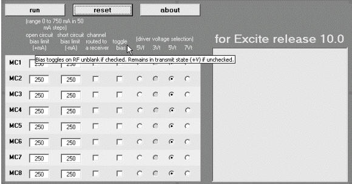
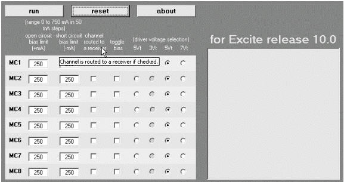
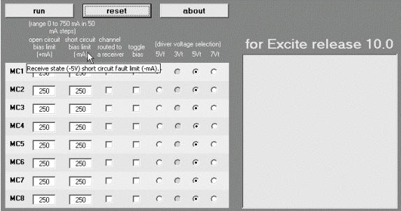
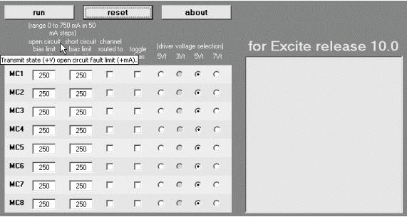

Operating Documentation
Direction 5133330-3, Rev# 14
Signa EXCITE HD 3.0T Service Methods
Module Version 1.0, Version Date 4/27/07
Operating Documentation |
A calculator tool has been created to define all coil config file parameters for multi-coil bias driver control and receiver selection. The startup screen for the calculator is shown in Illustration 1.
Illustration 1: Calculator Startup Screen

Every label, button, check box, text box, etc. has detailed help available: simply hover the cursor over the object. A few examples are shown in Illustration 2 through Illustration 7. Take a few minutes to position the cursor over each different type of object in the calculator interface to become familiar with the functioning of the controls.
Illustration 2: Calculator Help Example (5VT Column)

Illustration 3: Calculator Help Example (5 VF Column)

Illustration 4: Calculator Help Example (Toggle Bias Column)

Illustration 5: Calculator Help Example (Channel Routed to Receiver Column)

Illustration 6: Calculator Help Example (Short Circuit Bias Limit Column)

Illustration 7: Calculator Help Example (Open Circuit Bias Limit Column)
